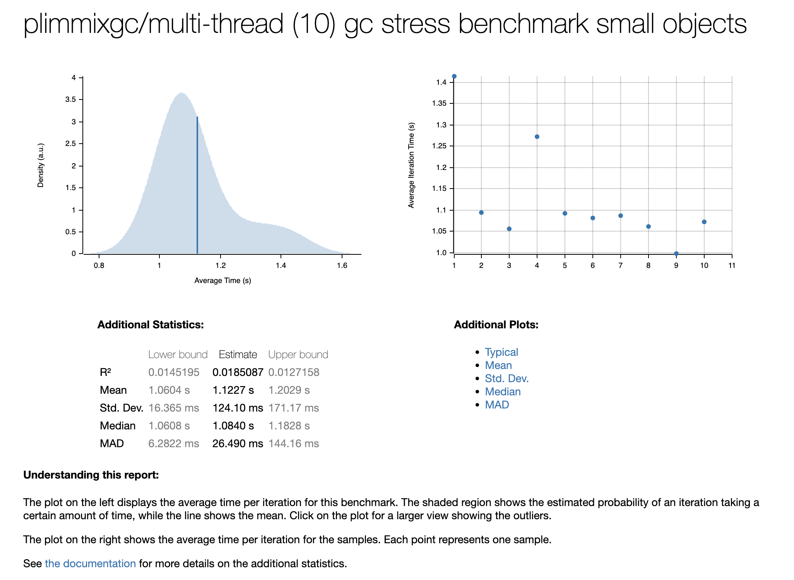
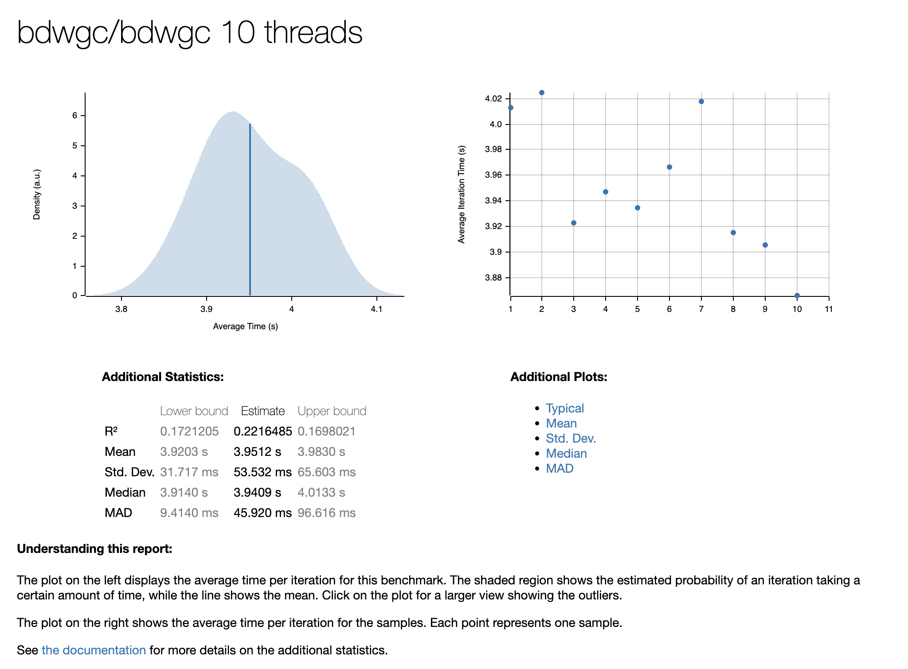
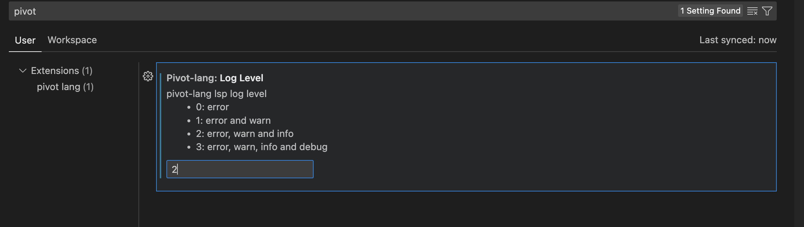
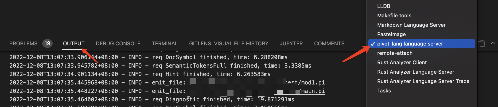

Pivot-lang


此项目目前处于早期开发阶段，不建议用于生产环境。
项目地址
安装
见此处
文档地址
https://lang.pivotstudio.cn
CONTRIBUTING
CONTRIBUTING
中文见此处
欢迎加入社区群
dependencies
重要：如果你想参与开发，请先在项目目录make vm install，然后根据自己是linux还是mac运行make devlinux或者make devmac
特点
- 静态编译（jit模式与immix gc不兼容，因为llvm生成自定义stackmap目前必需要静态编译）
- 极其方便的rust互操作
- 支持debug
- 支持lsp，自带vsc插件，能提供优秀的代码支持
项目结构
- vm 包含rumtime
- src 编译器源码所在
- internal_macro 内部过程宏
grammar
add_exp =
| mul_exp ("+" | "-" add_exp)?
;
mul_exp =
| unary_exp ("*"｜"/" mul_exp)?
;
unary_exp =
| pointer_exp
| ("-" | "!") pointer_exp
;
pointer_exp = ("&"|"*")* complex_exp;
complex_exp = primary_exp (take_exp_op|array_element_op|call_function_op)*;
take_exp_op = ("." identifier) ;
array_element_op = ('[' logic_exp ']') ;
call_function_op = ("(" (logic_exp (","logic_exp)*)? ")") ;
primary_exp =
| number
| bool_const
| parantheses_exp
| extern_identifier
| struct_init_exp
| string_literal
;
parantheses_exp = "(" logic_exp ")";
number = [0-9]+ ("." number)? ;
identifier = [a-zA-Z_][a-zA-Z0-9_]* ;
extern_identifier = (identifier "::")* identifier ;
bool_const =
| "true"
| "false"
;
compare_exp =
| add_exp (("<=" | "<"｜">="｜">"｜"=="｜"!=") add_exp)*
;
logic_exp =
| compare_exp (("&&"｜"||") compare_exp)*
;
struct_init_exp =
| type_name "{" (struct_init_exp_field ("," struct_init_exp_field)* )? "}"
;
struct_init_exp_field = identifier ":" logic_exp ;
assignee = pointer_exp;
assignment = assignee "=" logic_exp ;
new_variable = "let" identifier "=" logic_exp ;
global_variable = "const" identifier "=" logic_exp ;
if_statement = "if" logic_exp statement_block ("else" if_statement | statement_block)?;
while_statement = "while" logic_exp statement_block ;
for_statement = "for" (assignment | new_variable) ";" logic_exp ";" assignment statement_block;
statement_block = "{" statements "}" ;
impl_block = "impl" extern_identifier "{" function_def* "}" ;
statements = statement* ;
break_statement = "break" ";" ;
continue_statement = "continue" ";" ;
statement =
| assignment ";"
| new_variable ";"
| return_statement
| if_statement
| while_statement
| break_statement
| continue_statement
| complex_exp ";"
;
toplevel_statement =
| struct_def
| function_def
| global_variable
| use_statement ";"
;
program = toplevel_statement* ;
function_def = "fn" identifier "(" (typed_identifier (","typed_identifier)*)? ")" type_name (statement_block | ";") ;
generic_type = "<" type_name ("|" type_name)* ">" ;
generic_type_def = "<" identifier ("|" identifier)* ">" ;
struct_def = "struct" identifier generic_type_def? "{" struct_field* "}" ;
type_name = "*"* extern_identifier ;
typed_identifier = identifier ":" type_name ;
struct_field = typed_identifier ";" ;
return_statement = "return" logic_exp ";" ;
use_statement = "use" identifier ("::" identifier)* ";" ;
string_literal = "\"" [^"]* "\"" ;
trait_def = "trait" identifier generic_type_def? (":" type_add)? "{" function_def* "}" ;
type_add = type_name ("+" type_name)* ;
Quick Start: A short introduction to the language
重要：Pivot lang尚属于早期开发阶段，可能会经常发生breaking change，因此不建议在生产环境中使用。
本教程将会从安装出发，简单介绍Pivot lang的语法，以及一些基本的使用规则。
Installation
选择你需要的编译模型
Pivot Lang存在两种不同的编译方案：
- 静态编译：编译器会将源码编译成一个可执行文件，能给在操作系统上原生运行
jit编译：编译器会将源码编译成一个字节码文件，然后在运行时使用编译器指令进行解释执行
目前jit模式暂时不可用，因为它与我们新的immix gc不兼容，详细情况请看这里
目前这两种方案使用的编译器是同一个可执行文件（plc），然而他们在依赖和功能上存在一些差别， 下方是一个简单的对比图：
| jit | 静态编译 | |
|---|---|---|
| 完整的pivot lang功能支持 | ✅ | ✅ |
| 生成可执行文件 | ❌ | ✅ |
| 启动速度 | ❌ | ✅ |
| 依赖llvm | ❌ | ✅ |
| 依赖预编译的pivot lang系统库 | ❌ | ✅ |
| 运行时优化 | ✅ | ❌ |
| 支持debug | ❌ | ✅ |
| stackmap支持 | ❌ | ✅ |
可以看出，just in time模式的编译器依赖比静态编译少很多，因此如果你不需要debug功能，建议使用jit模式。如果你想要体验完整功能，建议使用静态编译。
Windows
TODO
Linux
目前我们对架构为amd64的Ubuntu 20.04 LTS 和 Ubuntu 22.04 LTS提供了apt包。
首先你需要添加我们的apt源的gpg key：
apt update
apt install wget gnupg
wget -O - https://apt.lang.pivotstudio.cn/public.key | apt-key add -
然后添加我们的apt源：
echo "deb [arch=amd64] https://apt.lang.pivotstudio.cn/repo focal main
# deb-src [arch=amd64] https://apt.lang.pivotstudio.cn/repo focal main
deb [arch=amd64] https://apt.lang.pivotstudio.cn/repo jammy main
# deb-src [arch=amd64] https://apt.lang.pivotstudio.cn/repo jammy main">/etc/apt/sources.list.d/pl.list
apt update
最后安装pivot lang编译器：
apt install pivot-lang
你可以运行plc来检查是否安装成功。
安装完成后请按照提示设置环境变量
MacOS
MacOS可以使用homebrew进行安装。
首先你需要添加我们的homebrew tap：
brew tap pivot-studio/tap
然后安装pivot lang编译器：
brew install pivot-lang
安装完成后请按照提示设置环境变量
Docker
TODO
基础项目
项目结构
一个最基础的pivot lang项目由一个配置文件和一个源文件组成。配置文件用于指定项目的一些基本信息，源文件用于编写pivot lang代码。其结构如下：
.
├── Kagari.toml
└── main.pi
配置文件
一个pl项目的根目录必须有一个名为Kagari.toml的配置文件。示例配置文件的内容如下：
entry = "main.pi"
project = "main"
entry指定了该项目的入口文件，即编译器将从该文件开始编译。如果缺少该配置plc将无法编译该项目
源文件
示例项目中的main.pi为源文件。其内容如下：
use std::io;
pub fn main() i64 {
io::printi64ln(666);
return 0;
}
源文件的后缀名必须为.pi。
在示例中，我们调用了一个系统库重的函数printi64ln，该函数用于打印一个i64类型的值并换行。此源代码编译后执行会输出666。
重要：
printi64ln函数是目前pl runtime中的一个测试用内置函数，此函数可能会在未来移除
编译
如果你已经安装了plc，那么你可以在项目根目录下执行plc main.pi命令来编译该项目。此指令会生成一个名叫out.bc的文件，还有一些中间文件
如果你配置了静态编译环境，还会生成一个叫做
out的文件，该文件是一个可执行文件，可以直接运行 而如果你只有jit环境，该文件不会生成，并且编译命令会输出一个clang报错和两行warning，这是正常现象
jit运行
编译后输入plc run out.bc可以jit运行该项目，其输出结果如下：
666
Visual Studio Code support
我们建议开发者使用Visual Studio Code作为开发工具，因为我们提供了丰富的插件支持。
vsc插件安装
在vsc插件市场搜索pivot-lang support，安装第一个即可

注意：pivot-lang support插件依赖于plc命令，你必须确保plc文件安装路径在环境变量
PATH中
支持功能
-
vsc debug
- 断点
-
变量表
- 函数参数
- 普通变量
- 代码高亮
-
lsp支持
-
错误容忍
- parser错误容忍
- ast错误容忍
-
代码提示
- 普通变量
- 函数参数
- 函数
- 类型
- 模块
-
代码跳转
- 普通变量
- 函数参数
- 函数
- 类型
- 模块
-
引用查找
- 普通变量
- 函数参数
- 函数
- 类型
- 模块
- 语法高亮
-
错误容忍
References
语言功能的参考文档。
Module
模块化
模块的划分和使用
总体来说，pl的模块化与rust类似，但是规则比rust简单。
任何一个pl文件都是一个模块，模块的名字就是文件名。一个pl项目的根目录一定有Kagari.toml配置文件，之后所有该项目
模块的路径都是从该文件所在的目录开始计算的。
举个例子，如果我的pl项目有以下的目录结构：
test
├── Kagari.toml
├── mod1.pi
├── main.pi
└── sub
└── mod.pi
如果main.pi想使用mod1.pi或者mod.pi中的函数，那么可以这样写：
use mod1;
use sub::mod;
fn main() void {
mod1::func();
mod::func();
return;
}
如果mod.pi想使用mod1.pi中的函数，那么可以这样写：
use mod1;
fn main() void {
mod1::func();
return;
}
！！！目前，pl的模块不支持循环引用，循环引用可能导致lsp崩溃。
！！！目前pl引入的所有模块必须对应到相对的pi文件（不能对应目录，也不能单独引入函数），而且不能引入同名的模块。
引用另一个pl项目
目前只支持引用本地的pl项目，引用的方式是在Kagari.toml中添加[deps]
[deps]
sub3 = { path = "sub2" }
使用时，引用的项目模块会在deps中定义的命名空间之下：
use sub3::lib;
fn main() void {
lib::func();
return;
}
Method
method就是隶属于某个结构体的函数，它们与普通函数没有本质区别。
所有的method都必须在impl块里声明，且method都会隐式的有个self参数，该参数是impl类型的指针
为什么pivot-lang的receiver是隐式的？因为我们有gc，所以没必要像rust那样显示的声明receiver类型，统一指针就可以解决几乎所有情况。
可能存在的问题：不方便约束receiver不可变的情况
Method Example
最简单的添加method的例子：
impl impl_struct {
pub fn add1() void {
self.x = self.x + 1;
return;
}
pub fn set(x: i64) void {
self.x = x;
return;
}
}
在一个包中，可以定义外部引入的包中结构体的method .
调用method的时候，使用<receiver类型>.<method>即可
let a = A{};
a.method();
Interface
接口设计
底层
接口底层实现为结构体，具有如下的结构：
类型哈希
---
原值指针
---
方法1指针
---
方法2指针
---
。。。
---
方法n指针
对应pltype使用PLTrait，其实内部存储的是结构体类型STType。
pivot-lang immix gc
本文档将会描述pl使用的immix gc的一些实现细节与对外接口
Table of Contents
Overview
此gc是我们基于immix gc论文实现的， 大部分的实现细节都与论文一致，对于一些论文没提到的细节我们自行进行了实现，参考了很多别的gc项目。该gc是一个支持多线程使用的、 基于shadow stack的，精确mark-region 非并发（Concurrency） 并行（Parallelism） gc。
gc中并发和并行是两个不同的术语，并发gc指的是能够在应用不暂停的基础上进行回收的gc， 而并行gc指的是gc在回收的时候能够使用多个线程同时进行工作。一个gc可以既是并行的也是并发的， 我们的immix gc目前只具备并行能力
- immix gc论文
- playxe 的 immixcons（immix gc的一个rust实现，回收存在bug）-- 很多底层内存相关代码是参考该gc完成的，还有在函数头中加入自定义遍历函数的做法
- 给scala-native使用的一个immix gc的C实现
- 康奈尔大学CS6120课程关于immix gc的博客，可以帮助快速理解论文的基本思路
General Description
本gc是为pl 定制的，虽然理论上能被其他项目使用，但是对外部项目的支持并不是主要目标
pl的组件包含一个全局的GlobalAllocator，然后每个mutator线程会包含一个独属于该线程的Collector，每个Collector中包含一个
ThreadLocalAllocator。在线程使用gc相关功能的时候，该线程对应的Collector会自动被创建，直到线程结束或者
用户手动调用销毁api。
mutator
mutator指使用gc的用户程序，在有些文档里也被指代为gc的client
block
block是immix中全局分配器分配的基础单位，每个block的大小为32KB
line
line是block中的基本单位，每个line长度为128B，每个block中包含256个line
Global Allocator
全局分配器，简称GA，分配内存以block为单位
Thread Local Allocator
线程本地分配器，简称TLA，分配内存以line为单位，在自身的block中分配，如果没有可用的block，会向全局分配器申请
Collector
线程本地的回收器，在每次gc开始的时候会运行标记和驱逐算法，然后通知Thread Local Allocator进行清扫
Evacuation
驱逐算法，是一种反碎片化机制
下方是使用immix gc的应用程序的工作流程图：
graph LR;
subgraph Program
style Collector1 fill:#b4b2e6
style Collector2 fill:#b4b2e6
direction TB
subgraph Immix GC
direction TB
GA
Collector1
Collector2
end
GA[Global Allocator]--give blocks-->TLA1;
TLA1-.return free blocks.->GA;
subgraph Collector1
direction TB
TLA1[Thread Local Alloctor]
Marker1[Marker]
end
GA--give blocks-->TLA2;
TLA2-.return free blocks.->GA;
subgraph Collector2
direction TB
TLA2[Thread Local Alloctor]
Marker2[Marker]
end
subgraph Mutator
direction TB
Thread1
Thread2
end
TLA1--lines-->Thread1
TLA2--lines-->Thread2
Marker1-.Mark, evacuate.->TLA1
Marker2-.Mark, evacuate.->TLA2
end
Immix GC由于分配以line为单位，在内存利用率上稍有不足，但是其算法保证了极其优秀的内存局部性，配合TLA、GA的设计也大大 减少了线程间的竞争。
Allocation
Global Allocator
GA是全局的，一个应用程序中只会有一个，负责分配block。在GA被初始化的时候，会向操作系统申请一大
块连续的内存，然后将其切分为block，每个block的大小为32KB。GA有一个current指针，指向
目前GA分配到的位置。当GA需要分配新block的时候，GA会返回当前current指针指向的内存空间，
并且将current指针向后移动一个block的距离。
GA同时维护一个free动态数组，用于存储已经被回收的block，当GA需要分配新block的时候，会先从free数组中
尝试取出一个block，如果free数组为空，才会分配新的block。
Thread Local Allocator
TLA是线程本地的，每个线程都会有一个TLA，负责分配line，和进行sweep回收。
- 小对象：小于line size的对象
- 中对象：大于line size，小于block size/4（8KB）的对象
- 大对象：大于block size/4的对象
- hole：block中一个未被使用的连续空间称之为hole
在每次回收的时候，TLA会将所有完全空闲的block回收给GA，所有部分空闲的block会被加入到recycle数组中，在之后的分配里被重复利用。
所有完全被占用的block会被加入到unavailable数组中，不会被重复利用。
TLA的小对象分配策略如下：
graph TD;
A[分配内存]-->B{有recycle block?}
B--是-->C[从recycle block中分配line]
B--否-->D{申请新block}
D--成功-->E[新block加入recycle block]
D--失败-->I[panic]
E-->C
C-->F{block用完?}
F--是-->G[移入unavailable block]
F--否-->H[返回分配空间的指针]
G-->H
中对象存在一个问题，就是如果他采用小对象的分配策略，在recycle block中分配line，那么分配过程中可能跳过 很多的小hole，而TLA的分配器在recycle block中分配的时候是不回头的，这样可能会导致：
- 内存碎片增加
- 分配时间变长
因此，中对象分配的时候只会找recycle block中的第一个hole，如果这个hole装不下它，TLA会直接申请新的block来分配该对象， 并且将这个block加入到recycle block中。
大对象分配不使用mark region算法，它使用特殊的bigobject allocator来分配，是传统的mark free算法。
因为程序中小对象的数量远远大于中对象和大对象，所以TLA的分配器会优先优化小对象分配，以增加性能
Mark
Mark阶段的主要工作是标记所有被使用的line和block，以便在后续的sweep阶段进行回收。我们的mark算法是精确的， 这点对evacuation算法的实现至关重要。
精确GC有两个要求：
- root的精确定位
- 对象的精确遍历
我们的精确root定位是基于Stack Map的，这部分细节过于复杂，将在单独的文档中介绍。
对象的精确遍历是通过编译器支持实现的，plimmix将所有heap对象分类为以下4种：
- Atomic Object：原子对象，不包含指针的对象，如整数、浮点数、字符串等
- Pointer Object：指针对象，该对象本身是一个指针
- Complex Object：复杂对象，该对象可能包含指针
- Trait Object：Trait对象，该对象包含一个指针，在他的offset为8的位置，这个类型是专门配合pivot lang的trait设计的，是个特殊优化
对于Atomic Object，我们不需要遍历，因为他们不包含指针。
对于Pointer Object，我们只需要遍历他们的指针即可。
对于Complex Object，编译器需要在对象开始位置增加一个vtable字段，该字段的值指向该类型的遍历函数。此遍历函数由编译器生成，
其签名为：
pub type VisitFunc = unsafe fn(&Collector, *mut u8);
// vtable的签名，第一个函数是mark_ptr，第二个函数是mark_complex，第三个函数是mark_trait
pub type VtableFunc = fn(*mut u8, &Collector, VisitFunc, VisitFunc, VisitFunc);在标记的时候，我们会调用对象的vtable对他进行遍历
对于Trait Object，我们需要遍历他指向实际值的指针
下方是一个immix heap的示意图，其中*表示该对象会在mark阶段中被标记
graph LR;
subgraph Stack
Root1
Root2
Root3
Root4
end
subgraph HO[Heap]
AtomicObject1[AtomicObject1*]
AtomicObject2[AtomicObject2*]
AtomicObject3
PointerObject1[PointerObject1*]
PointerObject2[PointerObject2*]
ComplexObject1
end
subgraph ComplexObject1[ComplexObject1*]
VT1[VTable]
PF1[PointerField]
AF1[AtomicField]
ComplexField
end
subgraph ComplexField
VT2[VTable]
AF2[AtomicField]
PF2[PointerField]
end
PF1 --> PointerObject1
PF2 --> AtomicObject2
PointerObject1 --> AtomicObject1
PointerObject2 --> ComplexObject1
Root1 --> PointerObject1
Root2 --> PointerObject2
Root3 --> PointerObject1
对于ComplexObject1，他的vtable函数逻辑如下：
fn vtable_complex_obj1(&self, mark_ptr: VisitFunc, mark_complex: VisitFunc, mark_trait: VisitFunc){
mark_ptr(self.PointerField)
mark_complex(self.ComplexField)
}而对于ComplexField，他的vtable函数逻辑如下：
fn vtable_complex_field(&self, mark_ptr: VisitFunc, mark_complex: VisitFunc, mark_trait: VisitFunc){
mark_ptr(self.PointerField)
}实际上，mark_complex和mark_trait逻辑都十分简单：mark_complex只是调用对象的vtable函数，而
mark_trait只是对实际指针调用mark_ptr，真正的标记和驱逐逻辑都在mark_ptr中实现。
标记过程开始的时候，gc会load所有root指向的值，对他们调用mark_ptr，如果该值为gc堆中的对象，
则会将该对象标记，并且再次load它指向的对象，若该对象非AtomicObject类型则加入到mark queue中。
在mark queue中的对象，会被逐个取出，根据他们的类型对他们调用mark_ptr、mark_complex或者mark_trait，直到
mark queue为空，则标记过程结束。
尽管这的确可以看作是一个递归的过程，但是此过程一定不能使用递归的方式实现，因为递归的方式在复杂程序中可能会导致栈溢出。
Sweep
Sweep阶段的主要工作是：
- 回收所有未被标记的block
- 修正所有line的header
- 计算evacuation需要的一些信息
回收block
回收block的过程非常简单，我们只需要遍历所有的block，如果block的header中的mark字段为false，则将该block回收，统一返回给GA
修正line header
如果一个block被mark了，那么需要对block中的所有lineheader根据line是否被标记 进行修正。
计算evacuation信息
计算一个mark数组，该数组中下标为idx的元素值表示hole数量为idx的所有block的marked line的数量
Evacuation
每次回收开始之前，我们会先判断是否需要进行反碎片化，目前的策略是只要recycle block>1就进行反碎片化。
如果决定了需要进行反碎片化，那么我们会构建一个available数组，该数组中下标为idx的元素值表示hole数量为idx的所有block的可用line的数量，
然后我们按照洞的数量从大到小遍历available和mark数组，会定义一个required值，该值在每次遍历的时候加上mark数组中的值，
减去available数组中的值，如果某次循环后required值小于0，那么当前循环对应的hole数量+1就是我们evacuate的阈值（threshold）。
在此之后根据threshole将所有洞数量大于等于threshole的block标记为待evacuate。
真正的evacuation过程是在mark阶段一起完成的，我们会在遍历到处于待evacuate的block中的对象时，为它分配一个新的地址，并且
将它原地址的值替换为一个指向新地址的指针（forward pointer），且将line header中的forward字段设置为true。之后如果再次遍历到
该对象，收集器会修正指向原地址的指针的值，这一过程我们称之为自愈。该过程如下图所示
graph TD;
subgraph BeforeEva
direction TB
EvaBlock
EmptyBlock
Pointer
end
subgraph EvaBlock
Line1
Line2
LineK[...]
LineN
end
subgraph Line1
Addr[addr: 0x1000]
Value[value: 0x4321]
Forward[forward: false]
end
subgraph EmptyBlock
EL1
ELK[...]
end
subgraph EL1[Line1]
AddrEL[addr: 0x2000]
ValueEL[value: 0x0000]
end
Pointer
Pointer-->Line1
subgraph AfterEva
direction TB
EvaBlock1
EmptyBlock1
Pointer1[Pointer]
end
subgraph EvaBlock1[EvaBlock]
Line11
Line21[Line2]
LineK1[...]
LineN1[LineN]
end
subgraph Line11[Line1]
Addr1[addr: 0x1000]
Value1[value: 0x2000]
Forward1[forward: true]
end
subgraph EmptyBlock1[EmptyBlock]
EL11
ELK1[...]
end
subgraph EL11[Line1]
AddrEL1[addr: 0x2000]
ValueEL1[value: 0x4321]
end
Pointer1-->EL11
BeforeEva-->AfterEva
每次驱逐是以分配的对象为单位，如果一个block被标记为待evacuate，那么在驱逐过程中，该block中的所有对象都一定会被驱逐。
请注意，一部分其他gc的驱逐算法中的自愈需要读写屏障的参与，immix不需要。这带来了较大的mutator性能提升。
驱逐算法的正确性建立在我们的root定位和对象遍历的正确性之上，如果root定位和对象遍历不精确， 建议禁用驱逐算法。这二者的不精确会导致驱逐算法修改的指针不能完全自愈。考虑下方场景：
struct Node {
next: *mut Node,
data: u32,
}
fn main() {
let mut root = Node {
next: null_mut(),
data: 0,
};
let stack_ptr = &mut root as * mut u8;
add_root(stack_ptr);
}
fn add_sub_ndoe(root: *mut Node) {
let mut node = Node {
next: null_mut(),
data: 0,
};
root.next = &mut node;
}
在这个例子中，我们只添加了一个root即main中的root变量，尽管add_sub_node中的node变量和root参数也是root，
但是不添加它们其实不会影响大部分gc在这个例子中的正确性。然而如果启用了驱逐算法，这个例子就很可能在运行时出错。
假如add_sub_node函数中触发了gc，且gc决定进行驱逐，将main函数中的root变量移动到了新的地址，那么在gc过程中
stackptr对应的指针指向的位置会自愈，更改为移动后的地址，但是add_sub_node函数中的root参数因为没被添加到root set中，
这导致gc无法在回收过程中对其进行修正，就会进一步导致root.next指向的地址不正确，从而导致程序出错。
在多线程情况下，是存在两个线程同时驱逐一个对象的可能的，在这种情况下一些同步操作必不可少，但是并不需要加锁。 我们通过一个cas操作来保证只有一个线程能够成功驱逐该对象。
性能
我们与bdwgc进行了很多比较，数据证明在大多数情况下，我们的分配算法略慢于bdwgc，与malloc速度相当，但是在回收的时候，我们的回收速度要快于bdwgc。 对于一些复杂的测试，在触发回收的策略相同的情况下，我们的单线程总执行时间略慢于bdwgc，但是在多线程情况下，我们的总执行时间明显快于bdwgc， 整体来说机器并行能力越强、测试时使用内存越多immix性能优势越大。
使用github action进行的基准测试结果可以在这里查看，由于github action使用的机器 只有两个核心，所以测试线程数量为2，在此结果中，可以看到immix整体性能略差于bdwgc，但是差距小于单线程情况。
你可以从这里下载测试代码，在你的机器上运行并进行比较。这里我提供一组笔者机器上的测试数据截图


测试环境为MacBook Pro (16-inch, 2021) Apple M1 Pro 16 GB，可以看出immix在此环境中已经具有近4倍的性能优势。
immix作为天生并发的gc，并发情况下几乎能完全避免锁竞争的出现，因此在多线程情况下的性能优势是非常明显的。并且其分配算法很好的维护了空间局部性，理论上 能带来更好的mutator性能。
Stak Map
Introduction
stackmap是一种用于实现精确gc的机制，简单来说它会在编译期间根据编译器提供的信息在编译后的目标文件 中插入栈变量的位置信息，这样在运行时gc扫描栈时就可以根据这些信息来确定栈上的变量的位置，从而完成精确回收。
stackmap方式的精确回收相比shadow stack的方式有以下优点：
- 无需维护gcroot链表，减少了开销
- 避免了运行时调用维护gcroot链表的函数形成的开销
但是同时它也有以下缺点：
- 跨平台存在劣势，各个平台的栈结构和可执行文件结构都有差异，stackmap过于底层，跨平台很复杂
- stackmap在回收的时候需要遍历函数调用栈，遍历栈的跨平台实现也很复杂，而且很多现有库都有bug
我们的stackmap功能基于llvm提供的一系列gc相关功能实现，llvm在这方面的文档十分混乱差劲， 甚至官网文档代码有一部分无法编译，还有很多地方严重过时与实际情况不符，因此全网都难找到基于llvm 实现stackmap功能的代码。本文档会尽量对这些部分进行说明。
细节实现
stackmap格式和读取方式
llvm提供了一系列的gc相关api，首先是gc策略，我们可以给每个函数指定一个gc策略，并且llvm内置了一些gc策略。
为了性能和方便考虑，我们的gc实现了自己的gc策略（plimmix），此策略通过一个自定义llvm插件实现。其代码在 immix/llvm 目录下 两个C文件一个定义了我们的GC策略，一个定义了我们的stackmap格式和生成方式。
我们的stackmap格式如下：
Header {
i64 : Stack Map Version (current version is 1)
i32 : function 数量
}
// 这里要对齐
Functions[NumFunctions] {
u64 : Function Address
i32 : Stack Size（单位是8字节）
i32 : 需要压栈的函数变量数量（不同平台不一样，大部分平台前6个参数会用寄存器传）
i32 : root数量
i32 : safe point数量
SafePoints[NumSafePoints] {
u64: 地址
}
Roots[NumRoots] {
i32: root的偏移(相对栈指针)
i32: root的类型
}
}
Global {
i32: global root数量
// 对齐
Roots[NumRoots] {
u64 : 地址
}
}
graph LR;
subgraph Front[编译器前端]
A[插入gcroot指令]
B[生成stackmap初始化代码]
A-->B
end
B-->C
subgraph Back[LLVM]
C[目标代码生成]
D[生成原始stackmap数据]
C-->D
end
D-->E
subgraph Plugin[Immix 插件]
E[生成stackmap]
F[写入目标代码数据段]
E-->F
end
safepoint是潜在的可以触发gc的点位，本来多用于进行多线程回收的同步：大部分gc 回收算法在回收时（全部或一部分时间）是不允许mutator运行的，这个时候需要暂停所有mutator 线程（stop the world），等回收完成后再恢复。使用safepoint机制的gc，在mutator线程运行到safepoint时会对 一个特殊flag进行检查，以判断自己是否需要暂停进行gc。在我们的immix gc中， safepoint通常由其中一个工作线程在自己的safepoint发起，别的线程到达自己的下一个safepoint是会随即暂停，等到所有线程 都暂停的时候再进行回收。我们的safepoint目前是在所有malloc点位，不过我们的llvm插件目前会将所有函数调用点位都当作 safepoint处理。
safepoint对于stackmap至关重要，因为在回收时gc就是通过在stackmap中查询当前暂停对应的safepoint地址来获取当前栈中的root集的。在暂停的时候safepoint地址在当前栈帧的ip寄存器中。
由于gc回收需要等待所有线程到达safepoint，所以如果一个线程长期不到达safepoint，别的线程在回收的时候就可能会一直等待。因此
immix提供一些工具函数。thread_stuck_start和thread_stuck_end，用于标记线程在执行某些长时间“卡住”的任务，在此期间
该线程需要保证不会使用gc分配新的内存，否则可能导致内存安全问题。在线程被标记为stuck的阶段触发的gc会跳过同步该线程。no_gc_thread
可以告知gc目前正在执行的线程不需要gc功能，该线程不会分配对应的ThreadLocalAllocator。
我们的llvm插件会将stackmap信息生成到每个目标文件的数据段中，应用程序可以使用weak link的方式用对应的全局变量获取到这个数据标签对应的地址，然后就可以通过这个地址来获取到stackmap信息了。对应数据区域标签的命名规则是：_GC_MAP_$source_file_name，其中$source_file_name是对应llvm module中记录的的源文件名。
stackmap有多种读取方式，下方是我们使用的方式：
immix gc提供了gc_init函数，该函数接受一个stackmap指针，会加载该stackmap。我们的编译器
会在编译的时候为每个模块生成一个初始化stackmap的函数，该函数以一定的规则命名，之后
在生成主模块的的时候会自动在main函数开始处对这些初始化函数进行调用。
这部分代码理论上可以通过llvm插件自动完成，这部分以后应该会进行实现。实现此功能之后，我们的immix gc将会成为可以方便的给任何基于llvm的语言接入的gc。
gc_init函数主要会读取stackmap中的数据并且进行遍历，之后生成一个哈希表，用于快速的查找对应的safepoint地址。这个哈希表的key是safepoint地址，value是safepoint所在
函数的所有gcroot信息。
基于stackmap的精确root定位实现
为了遍历函数调用栈，我们使用backtrace.rs包，该包封装了一些平台相关的函数调用栈遍历的实现。
栈爬取的实现不同平台差异巨大，很容易出现bug。目前我们发现在mac aarch64上如果使用lld进行链接会导致该backtrace包出现 segment fault，这个问题目前使用ld替代lld进行规避。
遍历的时候通过backtrace.rs拿到当前ip寄存器的值，然后去我们构建的stackmap中查找到当前函数栈的root进行遍历，遍历完成后继续向上层函数栈遍历。
注意这里遍历的起点不在mutator代码中，而在gc代码中，所以遍历的开头和结尾查不到对应记录是完全正常的。
参考资料
Compiler
pivot-lang编译器（以下简称编译器）主要由三个部分组成：nom分析器、ast和llvm后端。
Nom parser
nom parser包含了编译器的词法分析和语法分析部分。nom parser的主要功能是使用递归下降法将pivot-lang源代码转换为ast。
AST
AST是抽象语法树的简称，是编译器的中间表示。AST是由nom parser生成的，它是一个树形结构，每个节点都是一个结构体，包含了节点的类型、子节点、行号、列号等信息。
LLVM backend
本编译器使用llvm来生成目标代码，llvm的jit部分会被包含在我们的编译器可执行文件中，然而静态编译不行。因此静态编译相比jit会多一个llvm的依赖。
Parser
parser源代码位置位于src/nomparser目录下，包含了词法分析和语法分析部分。
nom
nom是一个用rust编写的parser combinator库，它不像lr分析器一样提供生成代码的功能，而是 提供一组函数，这些函数可以用来组合出各种parser。
相比于lr分析器，nom的优点是它的parser combinator非常灵活，熟练后可以快速组合出各种parser， 而且可自定义性非常的强，看起来也很直观，相比很多ir生成器的语法并没有复杂多少，但是带来了更好的 语法支持（一般的ir分析生成器的语法定义文件不会有编程语言那么好的语法支持）。
会使用nom是读懂编译器parser代码的重要前提，这里强烈推荐两个nom文档：
parser结构
parser的主要功能是使用递归下降法将pivot-lang源代码转换为ast。如果你不了解递归下降法，可以先看看这篇文章。
对于pivot lang的每一条语法规则，都会在parser里对应一个分析函数，这些分析函数可能会调用其他分析函数，最终最上层的分析函数可以将完整的源代码转换为ast。
pivot lang的完整语法规则见这里
parser最顶层的函数是parse，它接受一个源文件输出一个AST根节点。
#[salsa::tracked]
pub fn parse(db: &dyn Db, source: SourceProgram) -> Result<ProgramNodeWrapper, String> {
let text = source.text(db);
let re = program(Span::new_extra(text, false));
if let Err(e) = re {
return Err(format!("{:?}", e));
}
let (_, node) = re.unwrap();
log::info!("parse {:?}", source.path(db));
Ok(ProgramNodeWrapper::new(db, node))
}AST
抽象语法树是目前编译器中最复杂的部分，它是编译器的中间表示，也是编译器的核心。本节将介绍AST的设计和实现。
AST的设计
基本上，所有源代码中的基础单位都会对应抽象语法树中的一个节点。抽象语法树有很多类型的节点，他们可能会相互引用。
所有的节点都必须实现Node trait，这个trait定义了节点的基本行为。
#[enum_dispatch]
pub trait Node: RangeTrait + FmtTrait + PrintTrait {
fn emit<'a, 'ctx, 'b>(
&mut self,
ctx: &'b mut Ctx<'a>,
builder: &'b BuilderEnum<'a, 'ctx>,
) -> NodeResult;
}
#[enum_dispatch]
pub trait PrintTrait {
fn print(&self, tabs: usize, end: bool, line: Vec<bool>);
}
你可能注意到了，Nodetrait继承了RangeTrait，这个trait定义了节点的位置信息。
#[enum_dispatch]
pub trait RangeTrait {
fn range(&self) -> Range;
}一般来说，RangeTrait的实现通过#[range]宏来自动生成，你不需要手动实现它。
Node接口中的print函数用于打印节点的信息，它会被用于调试。print打印的结果和tree的输出非常像，你需要用一些工具函数来
格式化输出。以ifnode的print函数为例：
#![allow(unused)] fn main() { fn print(&self, tabs: usize, end: bool, mut line: Vec<bool>) { deal_line(tabs, &mut line, end); tab(tabs, line.clone(), end); println!("IfNode"); self.cond.print(tabs + 1, false, line.clone()); if let Some(el) = &self.els { self.then.print(tabs + 1, false, line.clone()); el.print(tabs + 1, true, line.clone()); } else { self.then.print(tabs + 1, true, line.clone()); } } }
emit函数是生成llvm代码的核心，它会调用llvm api构造自己对应的llvm ir。在编译的时候，最上层节点的emit会被调用，
该函数会递归的调用自己的子节点的emit函数，最终生成整个程序的llvm ir。
下方是ifnode的emit函数：
fn emit<'a, 'ctx, 'b>(
&mut self,
ctx: &'b mut Ctx<'a>,
builder: &'b BuilderEnum<'a, 'ctx>,
) -> NodeResult {
let cond_block = builder.append_basic_block(ctx.function.unwrap(), "if.cond");
let then_block = builder.append_basic_block(ctx.function.unwrap(), "if.then");
let else_block = builder.append_basic_block(ctx.function.unwrap(), "if.else");
let after_block = builder.append_basic_block(ctx.function.unwrap(), "if.after");
builder.build_unconditional_branch(cond_block);
ctx.position_at_end(cond_block, builder);
let condrange = self.cond.range();
let (cond, pltype, _) = self.cond.emit(ctx, builder)?;
if pltype.is_none() || !pltype.clone().unwrap().borrow().is(&PriType::BOOL) {
return Err(ctx.add_diag(
condrange
.new_err(ErrorCode::IF_CONDITION_MUST_BE_BOOL)
.add_help("use a bool variable instead")
.clone(),
));
}
let (cond, _) = ctx.try_load2var(condrange, cond.unwrap(), pltype.unwrap(), builder)?;
let cond = builder.build_int_truncate(cond, &PriType::BOOL, "trunctemp");
builder.build_conditional_branch(cond, then_block, else_block);
// then block
ctx.position_at_end(then_block, builder);
let (_, _, then_terminator) = self.then.emit_child(ctx, builder)?;
if then_terminator.is_none() {
builder.build_unconditional_branch(after_block);
}
ctx.position_at_end(else_block, builder);
let terminator = if let Some(el) = &mut self.els {
let mut child = ctx.new_child(el.range().start, builder);
let (_, _, else_terminator) = el.emit(&mut child, builder)?;
if else_terminator.is_none() {
builder.build_unconditional_branch(after_block);
}
if then_terminator.is_return() && else_terminator.is_return() {
TerminatorEnum::RETURN
} else {
TerminatorEnum::NONE
}
} else {
builder.build_unconditional_branch(after_block);
TerminatorEnum::NONE
};
ctx.position_at_end(after_block, builder);
if terminator.is_return() {
builder.build_unconditional_branch(after_block);
}
ctx.emit_comment_highlight(&self.comments[0]);
Ok((None, None, terminator))
}emit函数的参数是节点自身，第二个参数是编译上下文。编译上下文中会包含一些需要透传的信息，比如符号表，llvmbuilder，lsp参数等。
打印AST结构
plc命令行工具有打印ast的功能，你可以使用plc xxx.pi --printast命令来打印ast结构。
下方是一个ast打印结果的样例：
...
file: /Users/bobli/src/pivot-lang/test/sub/mod.pi
ProgramNode
└─ FuncDefNode
├─ id: name
├─ TypeNameNode
│ └─ ExternIdNode
│ └─ VarNode: void
└─ StatementsNode
└─ RetNode
file: /Users/bobli/src/pivot-lang/test/mod2.pi
ProgramNode
├─ UseNode
│ ├─ VarNode: sub
│ └─ VarNode: mod
├─ FuncDefNode
│ ├─ id: test_mod
│ ├─ TypedIdentifierNode
│ │ ├─ id: args
│ │ └─ TypeNameNode
│ │ └─ ExternIdNode
│ │ └─ VarNode: i64
│ ├─ TypeNameNode
│ │ └─ ExternIdNode
│ │ └─ VarNode: void
│ └─ StatementsNode
│ └─ RetNode
└─ StructDefNode
├─ id: Mod2
└─ TypedIdentifierNode
├─ id: y
└─ TypeNameNode
└─ ExternIdNode
└─ VarNode: bool
...
Flow Chart
这是一个附加功能，它将为每个函数生成流程图，以 .dot 文件格式输出，.dot 文件可通过
查看。
依赖
实现
流程图的生成包含两个步骤：
- 由 AST 生成
图数据结构 - 根据
图生成.dot文件
图的生成
我们以函数为单位生成 graph ，而 AST 根节点为 ProgramNode，因此我们需要遍历其 fntypes
，逐个生成 graph 最终得到一个 Vec ：
impl ProgramNode {
pub fn create_graphs(&self) -> Vec<GraphWrapper> {
let mut graphs = vec![];
for func in &self.fntypes {
if let Some(body) = func.body.clone() {
let graph = from_ast(Box::new(NodeEnum::STS(body)));
graphs.push(GraphWrapper {
name: func
.id
.name
.clone()
.replace(|c: char| !c.is_ascii_alphanumeric(), "_"),
graph,
});
}
}
graphs
}
}接下来实现 from_ast() 函数，它接收一个 NodeEnum（这是一个 Statements 节点）， 返回一个完整的 Graph，具体分为两步：
- 初步构建图(
build_graph()) - 去除不必要节点(
0入度节点,虚节点,空节点))
pub fn from_ast(ast: Box<NodeEnum>) -> Graph {
let mut ctx = GraphContext::new();
build_graph(ast, &mut ctx);
// 删除入度为 0 的节点
while remove_zero_in_degree_nodes(&mut ctx.graph) {}
// 删除虚节点
while remove_single_node(&mut ctx.graph, |_, t| *t == GraphNodeType::Dummy) {}
// 删除空节点
let remove_empty_nodes: fn(NodeIndex, &GraphNodeType) -> bool = |_, t| match t {
GraphNodeType::Node(t) => t.is_empty() || t.trim() == ";",
_ => false,
};
while remove_single_node(&mut ctx.graph, remove_empty_nodes) {}
ctx.graph
}主要介绍构建图的环节。
定义图的 节点 与 边 ：
#[derive(Debug, Clone, PartialEq)]
pub enum GraphNodeType {
Dummy, // 虚节点
Begin, // 起点
End, // 终点
Node(String), // 普通节点
Err(String, String), // 错误节点
Choice(String), // 选择节点
}
#[derive(Debug, Clone, Copy)]
pub enum EdgeType {
Normal,
Branch(bool), // 分支，带有 Y/N 等标签
}
pub type Graph = StableDiGraph<GraphNodeType, EdgeType>;build_graph()函数以 Statement 为单位，针对不同节点构建不同的图结构，为了方便的连接节点，我们定义了 GraphContext 用于存储上下文信息:
struct GraphContext {
pub graph: Graph,
pub break_target: NodeIndex,
pub continue_target: NodeIndex,
#[allow(dead_code)]
pub global_begin: NodeIndex, // 全图起点
pub global_end: NodeIndex, // 全图终点
pub local_source: NodeIndex, // 局部起点
pub local_sink: NodeIndex, // 局部终点
}每次调用 build_graph() 前，我们需要为构建部分提供两个 锚点(local_source, local_sink) ，第一次调用时，锚点 即为起点和终点，
以后每次调用前，均需构建两个虚节点，作为锚点(虚节点之后将被去掉)。
对于不涉及分支、循环、跳转的简单语句，图结构较为简单：
local_source -> current -> local_sink
local_source ------------> local_sink // 注释
local_source ---> ERR ---> local_sink // 错误
分支及循环语句则较为复杂(以 IF语句 为例)：
IF: /--Y--> sub_source -----> [...body...] ------> sub_sink ->-\
/ \
local_source -> cond local_sink
\ /
\--N--> sub_source1 -> Option<[...els...]> -> sub_sink ->-/
if.body 及 if.els 部分可以通过递归调用 build_graph() 构建，但是需要先生成两个虚节点，并暂时赋给 ctx，构建完毕后，
ctx 的 local_source/sink需要还原
对于语句块，对每个语句调用 build_graph() ，每次将 sub_source 更改为 sub_sink ，sub_sink 则重新创建：
for i in &v.statements {
context.local_source = sub_source;
context.local_sink = sub_sink;
build_graph(i.clone(), context);
if i != v.statements.last().unwrap() {
sub_source = sub_sink;
sub_sink = context.graph.add_node(GraphNodeType::Dummy);
}
}.dot 文件生成
我们只需按dot语法格式生成图的点/边的信息即可。下面是一个简单的dot文件：
digraph _pointer_struct__name_params {
D0 [shape=box, style=rounded, label="begin", fontname=""];
{rank = sink; D1 [shape=box, style=rounded, label="end", fontname=""];}
D4 [shape=box, label="return\l", fontname=""];
D4 -> D1;
D0 -> D4;
}
可以在Graphviz Online查看对应流程图。
Language Server
Pivot Lang的Language Server（以下简称LSP）是一个用于为编译器提供语法支持的组件，它同时被用于在编译期间生成诊断信息。
基本上，lsp能够为所有的现代代码编辑器提供服务，但是目前我们只为vsc提供官方支持。如果想在别的编辑器中使用lsp，可能需要自己写一个 简单的客户端插件。
⚠️注意事项
有一些函数功能纯粹，可能被用在很多无法预料的地方，如果在这些函数中操作非幂等的lsp相关功能很可能导致lsp最后工作时出现错误，请尽量避免！
目前大部分lsp的功能接口都是幂等的。semantic_token和doc_symbol不幂等
设计(design)
pivot-lang的lsp功能被内置于编译器中，它是以差量计算（incremental）为前提设计的。 目前整个lsp程序几乎是完全单线程的，但得益于我们的差量计算，它仍然具有不错的性能。
1. 差量计算(incremental)
差量计算是指在编译器中，当源代码发生修改时，我们只对发生变化的部分进行重新分析，而不是对整个项目全部重新进行计算。
pivot-lang的差量计算是基于rust的salsa库实现的。
我们使用的版本是仍然处于预览阶段的salsa_2022。
pl中的差量计算的最小复用单元是Module，即一个源文件。
在plc作为lsp运行时，所有的lsp功能相关计算会在TextDocumentEdit事件发生时进行，之后如果不进行文本编辑，所有的
lsp请求都会直接从缓存中读取结果。
2. 差量计算举例
假设我们有一个pl项目，其中有三个文件：a.pi、b.pi、c.pi。
其中a.pi和b.pi都引用了c.pi中的函数f，并且a.pi中还使用了b.pi中的函数g。
此时，当我们用vsc打开此pl项目，vsc会启动plc进行分析。如果没使用差量计算，那么plc分析流程如下：
尝试分析a.pi->
依赖c.pi->
分析c.pi->
返回继续分析a.pi->
依赖b.pi->
分析b.pi->
依赖c.pi->
分析c.pi->
返回继续分析b.pi->
返回继续分析a.pi->
完成
可以看到c.pi被分析了两次，这是不必要的。差量分析在这一步中可以优化掉第二次对c.pi的分析。
然后，假设我们在a.pi中添加了一个字符，那么如果没采用差量分析法，所有的模块都会被重新分析一遍。而差量分析法只会对a.pi进行重新分析。
接着，如果我们改动了b.pi，那么差量分析法会对b.pi和a.pi进行重新分析，而不会对c.pi进行重新分析。即：每次修改文件时，只会对该文件以及依赖该文件的文件进行重新分析。
3. 验证差量计算是否正常工作
我们可以在vsc的选项中找到一个plc的Log Level选项，将它设置成2之后就能看到plc的info日志了。

日志可以在vsc的outut中选择
pivot-lang language server查看 
这里会在每次重新计算的时候输出对应的log。
Diagnostic
诊断信息是个非常重要的功能，它可以帮助我们在编写代码的时候发现错误和可能有问题的地方，从而提高我们的编码效率。
为了让用户体验尽可能的好，我们的lsp分析需要尽量容忍用户的错误输入，尽可能多的分析出用户代码中的问题
Fault Tolerance
错误容忍是生成好的诊断信息的前提。在pivot-lang的中，我们分别在两个层面上实现了错误容忍：
- parser
- ast
Parser的错误容忍
nom parser架构中，如果出现了一个无法被识别的语句，整个分析器就会终止分析输出错误。这对于错误容忍的要求来说是无法被接受的。所以 我们的编译器不使用nom parser的默认错误处理机制，任何parser阶段产生的nom error都应该被视作bug，我们应该尽可能的避免这种情况。
在parse过程中，如果一些错误语句能非常明显的被识别为一个语法的未完成项（且没有歧义），我们应该将它识别为该语法类型的Node，并且在Node上加一个
flag标识它不完整（常常是is_complete），这样在ast阶段我们就能输出对应的诊断信息。
对于最常见的基础语法单位statement和top_statement，parser提供了一个helper函数except，能够在遇到不可被识别的错误语句的时候
将该“块”语句识别为ErrNode，以方便后续的分析正常进行。
！！！注意：ErrNode虽然很好用，但是它只能输出很宽泛的诊断信息（比如无法识别该语句），它是最后的错误容忍手段，应该尽量避免使用它
AST的错误容忍
由于parse阶段的时候能够容忍错误的语句，对于一些语法错误，ast节点只需要检查自身的完整性就能够输出诊断信息了。而对于语义错误（例如类型不匹配），我们需要在ast阶段
进行分析并获取结果。这些操作目前是在各个节点的emit函数里进行的。所有的emit函数都返回NodeResult类型，如果该节点的emit中出现了错误，
分析将会中断，其对应的错误信息会被添加到ctx（编译上下文）中并且作为error返回。上层函数如果遇到自己依赖的函数报错一定不能重复添加该错误至ctx中，
否则会导致错误信息重复输出。上层函数处理自己的依赖报错有两种情况：
- 直接停止分析并将该错误传递给自己的上级
- 忽略该错误继续进行分析
一般来说，大部分的expression和statement都会采用第一种方案，而statement block则会采用第二种方案
SystemLib
pl的系统库一部分是pl代码一部分是rust代码，rust部分在项目的vm目录中，pl部分在planglib目录中。
VM
放rust写的给pivot-lang使用的函数
所有导出的函数需要加#[is_runtime]，所有导出结构体需要加#[repr(C)]
JIT invalid memory access issue
在jit模式下使用runtime函数可能会出现invalid memory access错误，
这个问题本质是rust编译的时候会优化掉不使用的module，导致jit时找不到对应runtime函数。所以建议每个
mod加一个叫做reg的函数，里边必须用到你会使用的所有结构体，这样在需要jit测试的时候调用使用模块的reg函数，对应代码就不会被优化掉了。
使用is_runtime导出rust函数
一个被is_runtime标记的rust函数在编译到静态库之后，在pivot-lang中声明对应的函数，即可像正常函数一样调用。例如：
Rust:
#![allow(unused)] fn main() { #[is_runtime] fn printi64ln(i: i64) { println!("{}", i); } }
Pivot Lang:
fn printi64ln(i: i64) void
fn main() void {
printi64ln(1)
return
}
！！！注意事项：
is_runtime标记的函数不能有modifier（比如pub，unsafe），但是被is_runtime标记的impl块中的函数不受此限制。struct MyStruct; #[is_runtime("struct")] impl MyStruct { pub fn myfunc1() { // ... } }标记impl块时，导出的函数名称会变为
{structname}__{fnname}的形式，函数允许使用receiver。更多高级用法参见is_runtime的rust doc
GC
！WIP：此页面描述的功能仍然在实验性阶段，可能有些细节没有实现完毕。
pivot-lang 是一门使用gc进行内存管理的语言。
pivot-lang 的gc目前是使用rust写的，采用一种叫做immix[[1]](https://www.cs.utexas.edu/users/speedway/DaCapo/papers/immix-pldi-2008.pdf)的mark region算法。
在以前的版本中，我们使用的是我们现在叫做simple gc的垃圾回收算法，他是一个简单的mark-sweep算法。
它由于性能问题和不支持多线程等原因最终被immix取代。不过我们仍然保留了它的代码，并且设置了一个编译开关（feature:simple_gc），可以在编译时手动选择使用该gc算法。
Simple GC
simple gc就和他的名字一样，代码十分简单（算法实现大概100行）。它没有自己的allocator，直接
使用C中的malloc和free进行内存分配和释放。
simple gc是一个保守gc算法(Conservative Garbage Collection)，它没有能力精确的分辨出哪些内存是指针，哪些不是。因此它会试图将所有的内存都当做指针来处理。
目前simple gc不建议在生产环境中使用，其代码保留下来是为了方便我们在未来的版本中进行性能对比，以及为未来用于教育目的做准备。
Immix GC
immix gc是一种mark region算法，它是一个精确的gc算法。但是请注意，它的精确建立在使用它 的项目提供的特殊支持之上。可以认为目前我们的immix gc实现 是为pivot-lang量身定制 的。pl编译器为了和我们的immix gc配合，会在编译时专门生成一些额外的代码，如果缺少这些代码，immix gc将无法正常工作。 所以虽然理论上我们可以将我们的immix gc用到其他项目中，这么做的效益很可能并不是很高-- 缺少编译器的支持，使用者将需要手动添加那些额外的代码。
immix gc的实现代码在这里。它是天生支持多线程使用的，但是我们的pivot-lang目前还不支持多线程。
目前存在的一些问题
!!!NEED HELP!!!
似乎在windows上性能明显差于linux和mac，但是说实话我并不是这方面的专家，如果有大佬了解这方面欢迎帮我吗优化。
Benchmark
我们对两种gc算法进行了一些基准测试，事实证明immix gc的回收性能要比simple gc 快近20倍。如果你对这些测试感兴趣，可以在项目根目录运行make bench查看immix的benchmark，或者运行make bench-simple-gc查看simple gc的benchmark。
下方分别是simple gc和immix gc的benchmark结果，测试于2023年1月，commit 62b5c52c01e8133f5300e33a0131a50ba0c8d0de


planglib
planglib目录下的每一个文件夹都是一个系统模块，在编译的时候会自动被加入依赖中，不需要在配置文件中特殊配置。
planglib如何在编译期间被找到
plc编译器在编译时会试图寻找KAGARI_LIB_ROOT环境变量，并且将该变量视为planglib的根目录
不设置或错误设置
KAGARI_LIB_ROOT环境变量可能导致无法进行编译或者代码分析
如果你是plang开发者，你可以手动在~/.bashrc或者~/.bash_profile中加入以下代码：
export KAGARI_LIB_ROOT=<pivot-lang project path>/planglib
为Pivot Lang贡献代码
非常感谢您愿意对本项目提供帮助！
下方是对您为 pivot-lang 贡献代码的一些帮助
如果您刚开始了解pivot-lang项目，可以加入我们的社区 qq 群 向我们提问.
因为本项目还处于早期阶段: 本页面的指导很可能会在未来有更改，欢迎帮助我们改进此页面！
基础
开源协议
本项目使用 MIT 协议。对本项目贡献代码即表示您同意您的更改遵守该协议。
您能做的事情
Issues
我们有很多的已有的issue，在添加新功能的时候我们也会添加相关的issue。如果您发现我们的bug或者有什么需求，欢迎新建 issues 来告诉我们。您也可以看一些 open 的issue并且参与讨论或者贡献代码帮助修复它。
Code
非常欢迎帮助我们实现新功能。我们的新功能实现分为几个阶段：
- 提出，讨论需求的合理性和必要性
- 讨论实现方案
- 实现
- reveiew
- 合并
一些简单的需求可以跳过第二个阶段，所有超过第一个阶段的需求都会被放在我们的project中。如果您想帮助实现 已有需求，请去此页面寻找处于new或者ready状态的项目。如果您想实现一个新的需求，请先在issues中提出，最好加入 qq群 和我们一起讨论方案，在讨论决定通过后，我们会在project中添加一个新的对应项目。
Tests
强烈建议在提交修改的时候同时添加对应的测试，帮助我们将测试覆盖率保持在 85%, 帮助我们进一步完善测试也是相当欢迎的。
请在提交pr前确认自己的修改能通过所有的测试(通过运行 cargo test --all)
Benchmark
目前我们还没有基准测试，欢迎帮助我们添加基准测试。
文档
参见 文档 网站。对应源码在 book 目录中，欢迎帮助我们完善文档。
风格
Issue 风格
请在提出issue时提供至少三个小自然段的说明，包括：你想干什么，遇到了什么问题，如果复现这个问题等。
如果可能的话，希望您能提供:
- 如歌是在使用的时候遇到的bug，最好有一小段代码或者一个指向 gist 的链接，其中包含能复现问题的代码。
- 完整的 backtrace, 如果是进程崩溃相关的问题。
- 一个示例项目，如果是编译相关的问题。
代码风格
rust代码风格通过使用 rustfmt 进行统一 请尽量减少代码重复率，增加可读性。
为了避免不同的rust小版本格式化的区别，请使用以下命令格式化: cargo +stable fmt
聊一聊pivot-lang
这是这个项目的第一篇博客，这篇博客里我准备讲一讲这个项目的意义还有它的发展方向，还有一些写的过程中的有趣的话题。
这个项目希望创造出一种好用的类rust的新编程语言，他要具有大部分先进的特性，并且避免掉rust太难学习的缺点。
目前已经完成的部分和rust非常的像，但是已经有一些功能上出现区别，比如模块化。模块化表面上和rust有点像，但是其实完全不一样，要说类似其实反而和go更类似一些，不过也有很大区别。
我们预计之后的一些高级功能，比如代数类型、模式匹配和一些别的特殊语法糖上，我们会和rust有巨大分歧，这方面还敬请期待。
History
项目大概是2022年9月中旬开始的，一开始的时候我们几乎完全手写了第一版lexer和parser。当时那一部分代码大部分是@RINNE-TAN写的，因为我那个时候还不会rust，只能对@RINNE-TAN的代码进行拙劣的模仿。我们初期争论比较大的点是是否该用lr分析法的工具，而不是ll分析手写递归下降。最后我们还是觉得ll可控性更好一些，选择了手写。但是就写了个开头，我们就发现这玩意写到后边可维护性会有很大问题，简直是依托__。
所以我们开始重新考虑一些自动或者半自动的工具，比如antlr、lalrpop之类的。这些工具有个很严重的问题，就是他们往往需要在特殊格式里编写一部分源代码，而写这部分代码的时候是没有代码提示的。这对于其他的语言应该好一些，但是这对于rust来说是相当致命的，尤其是在我们没有人是rust大佬的情况下。
这个时候伟大的@RINNE-TAN找到了nom，虽然这个东西上手有点不习惯，但是熟练之后被证明究极好用，于是我们果断重写了之前的lexer和parser的代码。我代码量大概就是这个时候开始反超@RINNE-TAN的，因为重构几乎都是我搞的。
之后我们十一之前加班加点，希望在10.1期间作出一个有一些基础功能的版本，这期间有很多人都参与了代码编写，不过总体来说这一阶段的工作是比较简单的。唯一一个相对难一点的功能是@CjiW做的函数相关的功能，函数至今也是我们代码生成中最复杂的模块之一。
十一之后我们加入了大量lsp相关的功能，还有debug支持。这两个都是之前我做的项目中比较少或者没有涉及过的，意外的是这两个功能的实现都比较顺利。
顺带一提，项目里很多奇怪的东西还有一些文件的命名多少沾点二次元，这都是托了@RINNE-TAN大爷的福。
再后来，我们的高级功能开始提上日程，@RINNE-TAN几乎实现了泛型功能的所有代码，这部分逻辑十分复杂，因为涉及到自动泛型推断和代码膨胀等技术，是目前编译器中最复杂的功能之一。谢谢你，@RINNE-TAN!
顺便提一句，@RINNE-TAN现在是单身，如果有人对找程序员男朋友感兴趣，请抓紧
Future
接下来一段时间的首要任务是完善泛型功能，让impl快能加泛型，接口也支持泛型。然后，就是代数类型和模式匹配，这些任务预计寒假能搞完。之后的高级功能就是闭包和协程支持，然后需要完善系统库，gc支持多线程。如果非常顺利的话，寒假结束前有机会完成到协程。
项目现在非常缺人，如果你对开发pl感兴趣，请联系我们。
代码分析和差量计算
在lsp的文档中我简单介绍了差量计算在lsp模块中起到的优化作用，这里我将会详细介绍一下这个过程，希望能帮没接触过差量计算的小伙伴了解为何差量计算对于lsp的计算任务来说如此重要，以及什么情况下适合使用差量计算。
纯函数
差量计算中的基础对象一般是纯函数，纯函数的定义是：对于给定的输入，总是会有相同的输出，而且不会有任何副作用。
请注意其中不会有任何副作用这一点，如果要建立一个正确工作差量计算模型，必须要保证这一点。
带有副作用的函数为什么会影响差量计算正确性？
试想以下场景：我有两个参与差量计算的基础函数A和B，A不是纯函数，它会修改全局变量a，每次运行他会把a加一。
那么在某次计算过程中，A的输入与上次相同，B有变化，这导致B被重新执行了，而A直接使用上次缓存的计算结果，跳过了这次计算。那么这会导致本次计算全局变量a没有被A修改。这导致一个很严重的问题：即使用差量计算之后相比使用之前，相同情况下计算的影响不一样。
假设上方例子中不使用差量计算，那么A会被重新执行一次，这样a相比差量计算情况就会被多加一，正确的差量计算模型不应该对系统状态有影响，所以如果要使用差量计算，应该保证所有参与计算的函数都是没有副作用的纯函数。
一些容易被忽略的副作用情况
尽管纯函数的定义比较简单，上方的例子也比较直观，但是实际生产中其实很多函数都是有副作用的，而且很多初学者可能并不能完全分析出这些函数 的副作用。这里特别说一个容易被忽略的副作用情况：
- 修改被差量计算框架缓存的函数输出结果
在你分析一个函数有没有副作用的时候应该记住：被缓存的纯函数输出也属于全局状态，和全局变量没有本质区别。所以修改这些被缓存值也是有副作用的。修改这些值很可能在无意中发生：比如函数A的输出中有个类型指针，它输出后作为输入传给了函数B，函数B修改了这个类型指针指向的值，这样虽然看起来没有进行和全局变量相关的操作，但是实际上这个类型指针指向的值就是被缓存的函数A的输出，这种行为修改了缓存状态，是有副作用的。
差量计算系统设计原则
有了上方纯函数相关的知识，我们可以总结出一个正确的差量计算系统需要遵循的两条原则：
- 差量计算系统中，一个函数的输出应该是只读的，应该避免在别的函数中修改对应值
- 差量计算函数不能修改任何全局状态
实战举例--lsp引用查找功能设计
lsp引用查找是一个绝大部分语言插件都有的功能，它被使用的也很多，大部分程序员同学应该每天都会用到很多次。这个功能底层实现是比较简单的，如果不考虑差量计算的话：
在符号表中所有能被引用的符号中多存一个
refs链表，每次该符号被使用，往链表中加入被使用的位置。最后在接收到find reference请求的时候，查找到对应的符号，返回refs链表即可。
但是这么设计在差量计算的时候会遇到问题：假设我们差量计算的最小单位是compile_file函数，它的意义是编译一个文件，那么这个函数输出的编译结果中就应该包含该文件中定义的所有的符号，自然也包括这些符号的refs信息。然而，很多符号是可以被跨文件使用的，比如全局变量，这些符号的refs信息是跨文件的，所以这些符号的refs信息可能会在对别的文件调用compile_file函数时被修改，这样就违反了差量计算系统的第原则：差量计算函数不能修改任何全局状态。
如果我们直接用这种设计来进行差量计算的话：
假设有文件
A和文件B，A中有全局变量a，B中使用了全局变量a，第一次编译是全量编译，生成了正确的refs信息。第二次编译的时候，用户只修改了B，所以A的编译被跳过，复用了上次结果。这时请注意：a的refs链表是包含上次编译产生的完整结果的，而不是只有A文件中的引用信息，这一切都是因为B在编译的时候可能改A的编译结果，往a的refs里加值。
所以我们需要重新设计这个功能，我们需要把refs信息从符号中移除，放到一个与编译文件绑定的refs表中，这个表可以是map[str]vec<Location>类型，他只记录当前文件中符号的引用信息。当lsp收到find reference请求的时候，先找到对应的符号，然后再遍历所有文件的编译输出，找到对应符号在各个refs表中的记录，并且汇总。这样就可以保证差量计算的正确性了。
总结
我不是很擅长写文章，不知道这篇表达的清不清楚，如果能帮助到你就再好不过了。文章篇幅限制，这篇博客里跳过了差量计算框架的使用细节。 如果你对这方面感兴趣，可以参考我们的源代码。